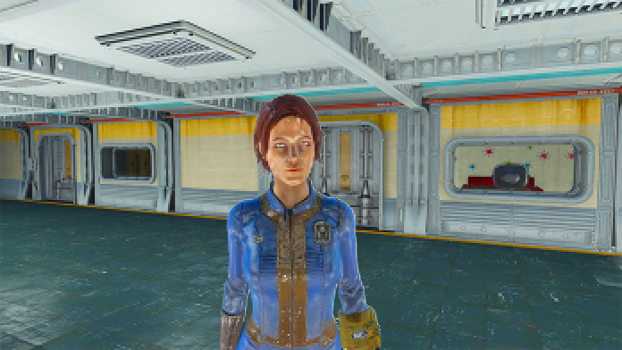

<!DOCTYPE html>
<html lang="en">
<head>
    <meta charset="UTF-8">
    <meta name="viewport" content="width=device-width, initial-scale=1.0">
    <title>Day 2 - Chose to Eat</title>
    <link href="https://fonts.googleapis.com/css2?family=Roboto+Mono:wght@400&display=swap" rel="stylesheet">
    <style>
        body {
            font-family: 'Roboto Mono', monospace;
            background-color: #1a1a1a;
            color: #e0e0e0;
            padding: 20px;
        }
        #game-container {
            max-width: 600px;
            margin: 0 auto;
            background: #333;
            padding: 20px;
            border-radius: 8px;
        }
        button {
            font-family: 'Roboto Mono', monospace;
            display: block;
            width: 100%; /* Optional: makes buttons stretch to the container width */
            background: #005f00;
            color: white;
            border: none;
            padding: 10px;
            border-radius: 5px;
            margin-top: 10px;
            cursor: pointer;
        }
        button:hover {
             background: #008e00;
        }
    </style>
</head>
<body>

<div id="game-container"></div>

<script>
// Retrieve player name and start the game
function startGame() {
    const characterName = localStorage.getItem('characterName');
    const sugarBombs = localStorage.getItem('sugarBombs'); // Get the sugarBombs status

    if (characterName) {
        gameStart(characterName, sugarBombs);
    } else {
        alert("No character name found. Please start again from Day 1.");
        window.location.href = 'day1.html'; // Redirect to Day 1 if no name found
    }
}

function gameStart(characterName, sugarBombs) {
    const gameContent = document.getElementById("game-container");
    gameContent.innerHTML = `
        <h1>Day 2</h1>
        
        <p>You wake up for another perfect day in the vault. You eat your breakfast, as usual, and begin getting ready. You step out of your room and begin walking to work, when you feel a tap on your shoulder.</p>
        <button onclick="turnAround('${characterName}', '${sugarBombs}')">Turn around</button>
    `;
}

// Kara interaction
function turnAround(characterName, sugarBombs) {
    const gameContent = document.getElementById("game-container");
    gameContent.innerHTML = `
        
        <p>Kara - "Hey ${characterName}!"</p>
        <button onclick="whatsGoingOn('${characterName}', '${sugarBombs}')">Hey Kara! What’s going on?</button>
        <button onclick="heardFromToby('${characterName}', '${sugarBombs}')">Have you heard from Toby?</button>
    `;
}

function whatsGoingOn(characterName, sugarBombs) {
    const gameContent = document.getElementById("game-container");
    gameContent.innerHTML = `
        
        <p>Kara: "Oh, not much. Have you heard anything from Toby? I’m getting worried, his room was cleared out this morning!"</p>
        <button onclick="chooseCheckToby('${characterName}', '${sugarBombs}')">I’ll go check it out. (go to Toby’s room)</button>
        <button onclick="chooseKaraRumor('${characterName}', '${sugarBombs}')">Huh, weird. (go to security office)</button>
    `;
}

function heardFromToby(characterName, sugarBombs) {
    const gameContent = document.getElementById("game-container");
    gameContent.innerHTML = `
        
        <p>Kara: "I was hoping you had. This morning his room was all cleared out!"</p>
        <button onclick="chooseCheckToby('${characterName}', '${sugarBombs}')">I’ll go check it out. (go to Toby’s room)</button>
        <button onclick="chooseKaraRumor('${characterName}', '${sugarBombs}')">Huh, weird. (go to security office)</button>
    `;
}

// Functions to store the player’s choice based on interaction with Kara
function chooseCheckToby(characterName, sugarBombs) {
    localStorage.setItem("tobyRoomStatus", "checked"); // Store that the player chose to check Toby's room
    tobysRoom(characterName, sugarBombs); // Proceed to Toby's room scene
}

function chooseKaraRumor(characterName, sugarBombs) {
    localStorage.setItem("tobyRoomStatus", "rumor"); // Store that the player heard it from Kara
    securityOffice(characterName, sugarBombs); // Proceed to the security office
}

function tobysRoom(characterName, sugarBombs) {
    const gameContent = document.getElementById("game-container");
    gameContent.innerHTML = `
        <p>You stop by Toby's room on your way to work. His door is now open, and the room appears to be cleared out. Toby is definitely a bit of a neat freak, but he wouldn’t just throw out his stuff. Maybe he moved to a different room?</p>
        <button onclick="securityOffice('${characterName}', '${sugarBombs}')">Go to Security Office</button>
    `;
}

// Start security office scene
function securityOffice(characterName, sugarBombs) {
    const gameContent = document.getElementById("game-container");
    const tobyRoomStatus = localStorage.getItem("tobyRoomStatus"); // Retrieve choice status from localStorage

    let optionsHTML = `
        <p>Charlie: "Good Morning ${characterName}! Toby is out again today. You mind another day in the rations room?"</p>
        <button onclick="rationsRoom()">Not at all! (Go to rations room)</button>
    `;

    // Show the Sugar Bombs option if the player put them back
    if (sugarBombs === "putBack") {
        optionsHTML += `<button onclick="sugarBombs()">I think Toby was snacking on Sugar Bombs during his shift</button>`;
    }

    // Show the Toby room dialogue options based on the stored status
    if (tobyRoomStatus === "checked") {
        optionsHTML += `<button onclick="iCheckToby()">Toby’s room has been cleared out. Have you heard anything from him?</button>`;
    } else if (tobyRoomStatus === "rumor") {
        optionsHTML += `<button onclick="heardFromHim2()">Kara said Toby’s room has been cleared out. Have you heard anything from him?</button>`;
    }

    gameContent.innerHTML = optionsHTML;
}


// Function for suspecting Sugar Bombs
function sugarBombs() {
    const gameContent = document.getElementById("game-container");
    const tobyRoomStatus = localStorage.getItem("tobyRoomStatus") === "checked";
    
    let optionsHTML = `
        <p>Charlie: "Ha! I knew it. Poor bastard gave himself a tummy ache."</p>
    `;
    
    // Add appropriate dialogue based on whether Toby's room was checked
    if (tobyRoomStatus) {
        optionsHTML += `<button onclick="iCheckToby()">Toby’s room has been cleared out. Have you heard anything from him?</button>`;
    } else {
        optionsHTML += `<button onclick="heardFromHim2()">Kara said Toby’s room has been cleared out. Have you heard anything from him?</button>`;
    }
    optionsHTML += `<button onclick="rationsRoom()">End conversation (Go to rations room)</button>`;

    gameContent.innerHTML = optionsHTML;
}

// Function if player checked Toby's room
function iCheckToby() {
    const gameContent = document.getElementById("game-container");
    gameContent.innerHTML = `
        <p>Charlie: "I’m sure there’s nothing to worry about. Probably moved him to a smaller room for eating on the job, haha! Now you better get to your post before they move you to a smaller room too!"</p>
        <button onclick="rationsRoom()">Go to rations room</button>
    `;
}

// Function if player did NOT check Toby's room and heard from Kara
function heardFromHim2() {
    const gameContent = document.getElementById("game-container");
    gameContent.innerHTML = `
        <p>Charlie: "Doesn't Kara have a tendency to exaggerate? I’m sure there’s nothing to worry about. Probably moved him to a smaller room for eating on the job, haha! Now you better get to your post before they move you to a smaller room too!"</p>
        <button onclick="rationsRoom()">Go to rations room</button>
    `;
}

// Jillian interaction in the rations room
function rationsRoom() {
    const gameContent = document.getElementById("game-container");
    gameContent.innerHTML = `
        <p>As you enter the rations room, you see Jillian sitting on a stool towards the back. She works security with you, but you don’t see her often as she normally works the night shift.</p>
        <p>Jillian: "Well look who finally decided to show up. I hope this place is more entertaining during the day because nothing happens here at night."</p>
        <button onclick="expectingMe()">Were you expecting me?</button>
        <button onclick="notReally()">Not really.</button>
    `;
}

function expectingMe() {
    const gameContent = document.getElementById("game-container");
    gameContent.innerHTML = `
        <p>Jillian: "I heard you were covering for Toby. Just wanted to say hi!"</p>
        <button onclick="heardFromHim()">Speaking of Toby, have you heard anything from him?</button>
        <button onclick="seeYou()">Good to see you!</button>
    `;
}

function seeYou() {
    const gameContent = document.getElementById("game-container");
    gameContent.innerHTML = `
        <p>Jillian: "Good to see you too! Well I better get going. I’m ready for a good meal and a nap."</p>
        <button onclick="endConversation()">I Won’t keep you from it. (end conversation)</button>
    `;
}

function notReally() {
    const gameContent = document.getElementById("game-container");
    gameContent.innerHTML = `
        <p>Jillian: "Sort of what I figured. Well I thought I would at least entertain you with my company for a minute. I am going to need a nap soon though."</p>
        <button onclick="endConversation()">I Won’t keep you from it. (end conversation)</button>
        <button onclick="heardFromHim()">Have you heard anything from Toby?</button>
    `;
}

function heardFromHim() {
    const gameContent = document.getElementById("game-container");
    const tobyRoomStatus = localStorage.getItem("tobyRoomStatus"); // Retrieve the stored status

    let optionsHTML = `
        <p>Jillian: "No, I haven’t. Is everything ok?"</p>
    `;

    // Show appropriate response based on the choice to check Toby's room
    if (tobyRoomStatus === "checked") {
        optionsHTML += `<button onclick="notSure()">Not sure. His room has been cleared out.</button>`;
    } else if (tobyRoomStatus === "rumor") {
        optionsHTML += `<button onclick="notSure()">Not sure. I guess his room has been cleared out.</button>`;
    }

    optionsHTML += `<button onclick="hesFine()">I’m sure he’s fine.</button>`;
    gameContent.innerHTML = optionsHTML;
}

function notSure() {
    const gameContent = document.getElementById("game-container");
    gameContent.innerHTML = `
        <p>Jillian: "Interesting. Seems kind of weird, right? Oh well. I better get going. Bye!"</p>
        <button onclick="endConversation()">Bye</button>
    `;
}

function notSure() {
    const gameContent = document.getElementById("game-container");
    gameContent.innerHTML = `
        <p>Jillian: "Interesting. Seems kind of weird, right? Oh well. I better get going. Bye!"</p>
        <button onclick="endConversation()">Bye</button>
    `;
}

function hesFine() {
    const gameContent = document.getElementById("game-container");
    gameContent.innerHTML = `
        <p>Jillian: "Ok then! I better get going. Bye!"</p>
        <button onclick="endConversation()">Bye</button>
    `;
}

function endConversation() {
    const gameContent = document.getElementById("game-container");
    gameContent.innerHTML = `
        <p>The door closes behind Jillian. You are once again left alone in the rations room. After about an hour of nothing happening, the Overseer comes in and sluggishly makes his way to the preparation room. He’s in there for 20 minutes or so and then makes his way back out. You have a chance to catch him before he goes back out to the main hall.</p>
        <button onclick="askAboutToby()">Ask about Toby</button>
        <button onclick="backToRations()">Let him be</button>
    `;
}

function askAboutToby() {
    const gameContent = document.getElementById("game-container");
    gameContent.innerHTML = `
        <p>Overseer: “What are you looking at?”</p>
        <button onclick="backToRations()">Nothing, sir. (end conversation)</button>
        <button onclick="justWondering()">Just wondering if you knew anything about Toby?</button>
    `;
}

function justWondering() {
    const gameContent = document.getElementById("game-container");

    // Retrieve the status of Toby's room check
    const tobyRoomStatus = localStorage.getItem("tobyRoomStatus");

    // Display appropriate button based on whether the player checked Toby's room
    let optionsHTML = `
        <p>Overseer: “Why the hell do you care?”</p>
    `;

    if (tobyRoomStatus === "checked") {
        optionsHTML += `<button onclick="iNoticed()">Just making sure he’s ok. I noticed his room has been cleared out.</button>`;
    } else {
        optionsHTML += `<button onclick="iNoticed()">Just making sure he's ok. I heard his room has been cleared out.</button>`;
    }

    optionsHTML += `<button onclick="backToRations()">I don’t, sorry. (end conversation)</button>`;

    gameContent.innerHTML = optionsHTML;
}

function iNoticed() {
    const gameContent = document.getElementById("game-container"); // Corrected ID here
    gameContent.innerHTML = `
        <p>Overseer: “Give it a week. You won’t remember or care anymore.”</p>
        <p>The Overseer turns around before you can say another word. What did he mean by that?</p>
        <button onclick="backToRations()">Continue</button>
    `;
}

// fix saying "nothing sir" not leading here
function backToRations() {
    const gameContent = document.getElementById("game-container");
    gameContent.innerHTML = `
        <p>The door closes behind the Overseer. The silence is deafening. Your eyes drift to the door to the preparation room. You know you’re not supposed to go in there, but you feel as though the answers to your questions lie on the other side.</p>
        <button onclick="waitOutShift()">Wait out shift</button>
        <button onclick="preparationRoom()">Enter preparation room</button>
    `;
}

function waitOutShift() {
    const gameContent = document.getElementById("game-container");
    gameContent.innerHTML = `
        <p>You sat through another long day in the rations room. The door to the neighboring preparation room called to you the entire time. You clock out and make your way home. You begin to go through your normal nightly routine.</p>
        <button onclick="demoEnd()">Eat dinner</button>
        <button onclick="demoEnd()">Don’t eat dinner</button>
    `;
}

// Preparation room and terminal interaction
function preparationRoom() {
    const gameContent = document.getElementById("game-container");
    gameContent.innerHTML = `
        <p>The door to the preparation room slides open. The Mr. Handy’s don’t even acknowledge your presence. They continue seamlessly flying and working around each other. Some of them are packing food products and mixing ingredients. The rest are working with a strange white powder. At first, you mistook it for sugar, but there’s too much of it and they seem extra careful handling it.</p>
        <p>You notice a terminal in the back corner of the room.</p>
        <button onclick="activateTerminal1()">Activate terminal</button>
    `;
}

function activateTerminal1() {
    const gameContent = document.getElementById("game-container");
    gameContent.innerHTML = `
        <p>ROBBO INDUSTRIES (™) TERMINAL PROTOCOL</p>
        <p>COPYRIGHT 2075-2077 ROBCO INDUSTRIES</p>
        <p>- SERVER 1 -</p>
        <button onclick="log22278()">2/22/65</button>
        <button onclick="log71265()">7/12/65</button>
        <button onclick="log51866()">5/18/66</button>
        <button onclick="exitTerminal1()">EXIT</button>
    `;
}

function log22278() {
    const gameContent = document.getElementById("game-container");
    gameContent.innerHTML = `
        <p>I DIDN’T THINK THEY COULD GET ANY DUMBER. VAULT-TEC MADE IT CLEAR THEY DIDN’T WANT THEM TO WAKE UP TO ANY CAPACITY, SO MY HANDS ARE KIND OF TIED WHEN IT COMES TO LOWERING THE DOSAGE. BUT AFTER GENERATIONS OF THIS CRAP IN THEIR SYSTEMS, THEY’VE BECOME BRAINDEAD. I ACTUALLY SAW ONE OF THESE POOR BASTARDS KNAWING ON HIS OWN ARM. ONCE HE DREW BLOOD HE STARTED LAUGHING.</p>
        <button onclick="activateTerminal1()">Back</button>
    `;
    localStorage.setItem("logChecked", "true"); // Mark that a log has been checked
}

function log71265() {
    const gameContent = document.getElementById("game-container");
    gameContent.innerHTML = `
        <p>THEY’RE BECOMING SLUGGISH LATELY. I THINK IT’S TIME TO UP THE DOSAGE. I’M GOING TO MISS NOT HAVING THEM ALL SMILE AT ME CONSTANTLY.</p>
        <button onclick="activateTerminal1()">Back</button>
    `;
    localStorage.setItem("logChecked", "true"); // Mark that a log has been checked
}

function log51866() {
    const gameContent = document.getElementById("game-container");
    gameContent.innerHTML = `
        <p>THOMAS FELL OFF THE BALCONY AND BROKE HIS NECK LAST WEEK. I CONSIDER HIM LUCKY. AT LEAST HE GOT TO LEAVE THIS HELL HOLE. THE INTERESTING THING IS NO ONE EVEN SEEMS TO REMEMBER HIM ANYMORE. I GUESS DEALING WITH LOSS WOULD BE IMPOSSIBLE WHEN YOU CAN’T FACE REALITY. WHAT IS GOING ON IN THOSE TINY LITTLE HEADS OF THEIRS?</p>
        <button onclick="activateTerminal1()">Back</button>
    `;
    localStorage.setItem("logChecked", "true"); // Mark that a log has been checked
}

// Function to exit the terminal
function exitTerminal1() {
    const gameContent = document.getElementById("game-container");

    // Check if any log has been checked
    const logChecked = localStorage.getItem("logChecked") === "true";

    // Display different text based on whether a log was checked
    if (logChecked) {
        gameContent.innerHTML = `
            <p>You slowly backed away from the computer. You couldn’t believe your eyes. You look around the room. The food. The white powder. The Mr. Handys mixing it all together.</p>
            <p>You decide it’s time to leave. You quickly exit the Preparation Room and clock out of your shift. You have tunnel vision walking back to your room. Someone may have tried to talk to you but you wouldn’t know. All you could think about was what was written on the terminal.</p>
            <button onclick="backToRoom()">Continue</button>
        `;
    } else {
        gameContent.innerHTML = `
            <p>You decide not to check any logs. Best not to poke around. Time to get out of here and clock out.</p>
            <button onclick="clockOut()">Clock out</button>
        `;
    }
}

// Function to go back to the room after reading logs
function backToRoom() {
    const gameContent = document.getElementById("game-container");
    gameContent.innerHTML = `
        
        <p>You make it back to your room. It’s time to settle down for the night, despite the horrifying news you’ve discovered. Perhaps tomorrow will be a better day.</p>
        <button onclick="demoEnd()">Eat dinner</button>
        <button onclick="demoEnd()">Don’t eat dinner</button>
    `;
}

function clockOut() {
    const gameContent = document.getElementById("game-container");
    gameContent.innerHTML = `
        
        <p>You make it back to your room. You begin to go through your normal nightly routine. Perhaps you'll find more answers tomorrow.</p>
        <button onclick="demoEnd()">Eat dinner</button>
        <button onclick="demoEnd()">Don’t eat dinner</button>
    `;
}

function demoEnd() {
    const gameContent = document.getElementById("game-container");
    gameContent.innerHTML = `<p>End of Demo</p>`;
}

// Start the game
startGame();
</script>
</body>
</html>
